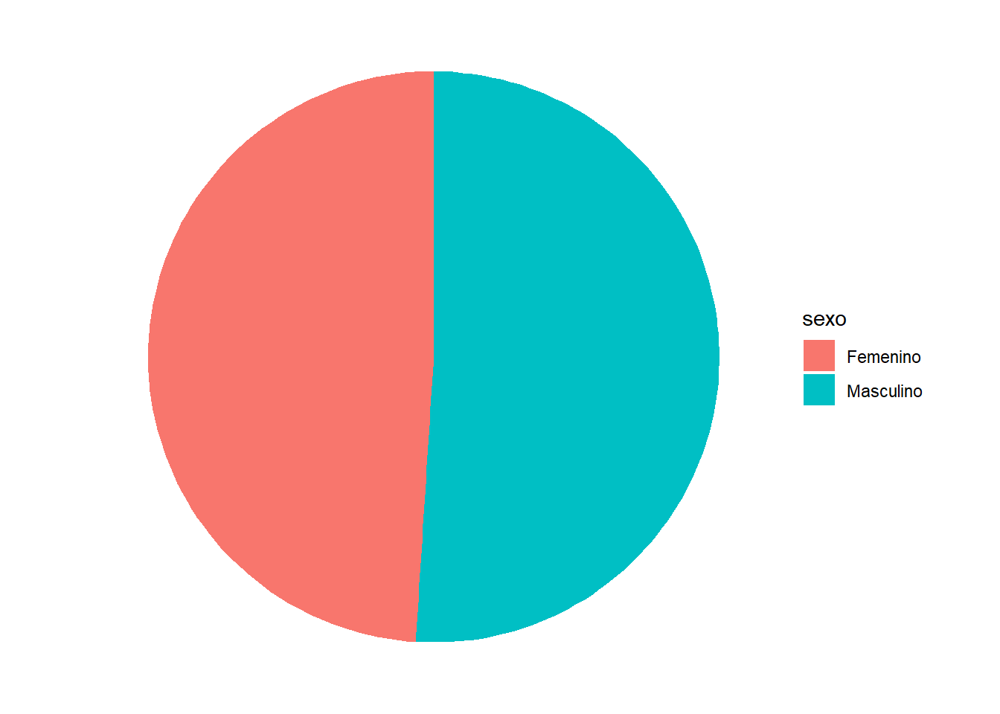

Anuario Estadístico 2019
2021
Capítulo1 Población
asdasd
| Regional | Femenino | Masculino | Total |
|---|---|---|---|
| La Paz | 20933 | 18947 | 39880 |
| Santa Cruz | 14418 | 16832 | 31250 |
| Cochabamba | 9203 | 8204 | 17407 |
| Tarija | 2157 | 1819 | 3976 |
| Chuquisaca | 1649 | 1784 | 3433 |
| Oruro | 4519 | 1481 | 3050 |
| Potosí | 1273 | 1165 | 2438 |
| Beni | 1251 | 1162 | 2413 |
| Pando | 305 | 264 | 569 |

Figure 1.1: Distribución porcentual de la Población por sexo